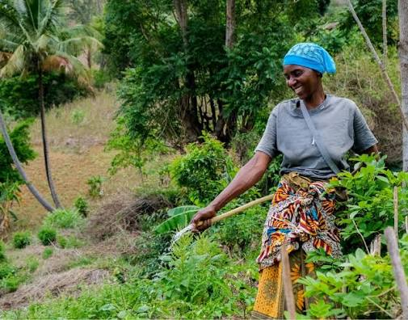

Farmers
Show what is ready, set your terms, and reach buyers beyond the gate.
List a harvestA clearer route from field to table
ShambaLink brings Tanzanian farmers, trusted agents, and serious buyers into one simple market—so every harvest has a better chance to reach the people who need it.
One network, three roles
ShambaLink keeps everyone close to the information they need—without making anyone speak a different language.

Show what is ready, set your terms, and reach buyers beyond the gate.
List a harvest
Coordinate collection, connect the right people, and keep every promise visible.
Coordinate a route
Find dependable supply, compare details, and buy with confidence.
Find produceLive market board
Tanzania market references · verify the final negotiated price with your agent before trading.
Reference movement over the last four market checks.

Dry grain, bagged and sorted

Clean, locally milled grain

Sun-dried, farm-gate harvest
No listings match that search yet. Try another crop or clear the filter.
The route
Every handoff gets a little clearer, from the first listing to the final delivery.
Share crop, quantity, timing, and pickup details in a few minutes.
Agents can help coordinate collection while buyers compare real options.
Keep the conversation, expectations, and next step in one visible place.
Start with your role
Join the ShambaLink network and connect with farmers, agents, and buyers across Tanzania.